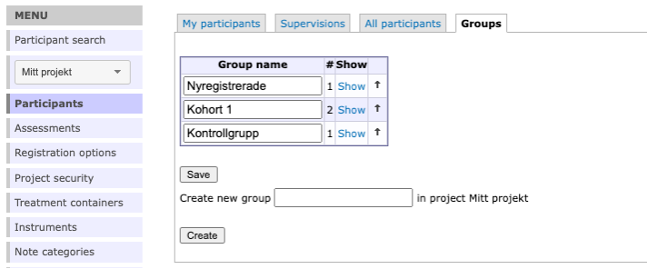

Chapter 14 Groups
You can use groups in your project, for example to administer different cohorts. You access Groups from the “Participants” option in the main menu, and then you select the tab Groups.
To create a group, simply type the name into the text box and click Create.

If you want to edit this name later on, you can easily do so by editing the name directly in its box and click Save.

In the groups overview one can see the number of participants in each group.
Hint: You can rearrange the order of the groups by using the arrows in the right most column
To administer a group further click Show on the group you are interested in. This will take you to a view with two tabs
- Group participants
- Group Assessments
In group participants you can se a list of all the participants in the current group. From here you can administer the participants individually just like in the other participant list views. See more on this in Chapter 10